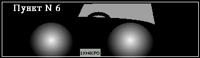

Пункт номер шесть.
Из приведенной ниже истории читатель узнает, каким образом некоторым
людям удается заработать пятнадцать тысяч долларов за полчаса. Не меньший
интерес представляет и техника взаимодействия уголовного розыска, ГАИ,
авиации и работников лесного хозяйства. И хотя все закончилось весьма
неожиданно, предприниматель Семенюк все таки получил обратно свои деньги.
История эта началась в кабинете майора милиции Иннокентия Фокина с телефон-
ного звонка во время очередного совещания. Майор любил, когда ему звонили во
время совещаний. А случалось это часто. Он брал трубку и беседовал, стараясь
чтобы разговор продолжался как можно дольше. Ему нравилось при этом наблюдать
за подчиненными, которые томились, вздыхали и поглядывали не часы. Особенно
любопытно было глядеть на тех сотрудников, которым была поручена срочная ра-
бота и которые знали, что если они не уложатся в срок, им грозит наказание.
Наказавать майор тоже очень любил. Благодаря телефонным звонкам Фокину удава-
лось проводить двух- или даже трехчасовые совещания, хотя, по правде говоря,
на это хватило бы двадцати минут. Но если вдруг майору звонили в другое время,
он отвечал: "Совещание!" и тут же бросал трубку.
Итак, зазвонил телефон.
- Начальник районного отделения уголовного розыска майор Фокин, слушаю
вас... Да... Да... Ого! - майор присвистнул, - Да, жду.
К великом удивлению сотрудников майор тут же закончил разговор и объявил,
что все свободны, поскольку совещание пока откладывается.
Подчиненные удалились, а Фокин, оставшись в одиночестве, закурил и стал
отстукивать по поверхности стола нервную барабанную дробь.
Минут через пять дверь без стука распахнулась и в кабинет ворвался местный
предприниматель Роман Семенюк, известный также под кличкой Ромашка. Это был
толстый молодой человек лет двадцати пяти - тридцати. Человек был одет в
белую, вероятно очень дорогую рубашку, мокрую от пота и расстегрутую до
живота. К волосатой груди прилипла невероятных размеров золотая цепь. На
бедрах болтались легкомысленные цветные шорты по колено, а голова была укра-
шена жирной лысиной, которая у людей его круга именуется "спортивной
прической". В целом посетитель выглядел весьма неприятно и напоминал огромную
жабу. Он чихал, отплевывался и часто прикладывал носовой платок к слезящимся
глазам.
- Грабанули меня, Кеша, - выпалил человек, пожимая протянутую ему руку, -
кинули, как лоха!
- Слышь, Рома, ты сперва садись и давай все по-порядку. - Майор подвинул
стул, - Расскажи все путем. Что? Где? Как?
- Ага, поймай мне этого урода... А че тут рассказывать? Грабанули, как...
уф... Короче, выходил я от клиента с бабками. Подхожу, значит, к своей тачке...
- Стой, стой, что за клиент?
- Ну ты даешь, брат! Какая тебе разница? Говорю же, деньги у меня были. В
пакете.
- Ну, ладно... Много денег?
- Пятнадцать штук баксов.
- Номера купюр известны?
- Какие номера! Просто баксы, россыпью так. Сунул в пакет и пошел.
- Мда... ну, хорошо, подходишь ты к машине и что дальше?
- А тут "Запор" подруливает, такой с ушами.
- "Запорожец", ЗАЗ-968 - уточнил майор.
- Ага, выскакивает из него дед и в рожу мне этой дрянью.
- Баллончик?
- Какой на хрен баллончик! Брызгалка, типа как дети играют. Пластиковая
бутылка от шампуня и дырка в крышке. А в бутылке вода с красным перцем. Я
по вкусу узнал. Ну я пока скукожился, а дед в это время пакет выдернул. У меня
только ручки остались... А он в свой "Запор" и погнал. Я ж не вижу нифига,
только вот позвонить смог. Кинули, блин, как лоха. Хорошо, что пацаны не
знают.
- Ну а что же ты с деньгами и без охраны?
- Да мне ж десять шагов было пройти. И потом, откуда я знал что у тебя среди
бела дня бандиты по улицам шляются? Вообще, нахрена я тебе бабки плачу?
- Ладно, ладно, не шуми. Говорю - поймаем. Через час тут будет твой дед, не
в первый раз... Так... Ну, а как он выглядел? Как одет? Сколько лет примерно?
- Почем я знаю, сколько лет? Ну может девяносто, может пятьдесят, не шарю я
в этом. Такой весь тощий не козла похож. Борода седая. Одет в белое.
- Машина как выглядит?
- "Запор", темно-зеленый, видать очень старый и гнилой. И у него еще переднее
правое крыло - коричневое, не родное.
- Номер, конечно, не запомнил?
- Конечно...
- Так, а дед этот молча пакет вырвал или, может, сказал чего?
- Да гнал что-то.
- Что именно, вспомни, это может быть важно.
- Да фигню всякую ну, короче, что типа таких как я стрелять вообще пора...
- Ясно, - майор удовлетворенно хмыкнул, - сейчас Рома, ты станешь свидетелем
образцово-показательного задержания. И поймаю я твоего твоего террориста даже
не вставая с этого кресла. Гляди. Пункт первый, звоним в ГАИ. - и он начал
набирать номер.
- Только не стесняйся, пожалуйста, - сказал Рома и переключил телефон в
громкоговорящий режим, - я тоже хочу послушать.
- Начальник районного отдела ГАИ майор Ковалевский, - раздалось из аппарата, -
слушаю вас.
- Привет, Иван, это я.
- А, Кеша, как твое "ничего"?
- Ага, класс...слышь, Вань, у меня тут маленькое ограбление, - он покосился
на Ромашку, - в общем, грабитель скрылся в "Запорожце", ЗАЗ-968 темно - зеле-
ного цвета. Правое переднее крыло - коричневое. Номер неизвестен. Водитель -
мужчина пожилого возраста, с бородой. Одет в белое. Звякни на посты, пускай
стопорят.
- Вооружен?
- Хрен его знает... Да, и узнай, может видели, останавливали? В каком напра-
влении скрылся?
- Спрошу, но скорее всего не останавливали. Мои хлопцы таких не останавливают.
Что с него толку-то? Дед на "Запоре".
- Ну бывай, пока. Если что узнаешь, сообщи. - Фокин положил трубку, - Так,
теперь пункт второй, козырный. Вертолет.
Майор набрал номер.
- Дежурный по авиаотряду лейтенант Ротко.
- Это Фокин. Поднимайте тачку в воздух. Объект - темно-зеленый ЗАЗ-968 с
коричневым передним правым крылом. Разыскивается в связи с ограблением в
районе минут двадцать назад. Далеко не мог уйти. Как обнаружите, доложите.
Да! Сдайте дежурство и летите лично.
- Есть, товарищ майор.
- Ну а теперь пункт третий - пояснил Фокин, нажимая на рычажок и набирая
следующий номер, - даем команду участковым по району. - И он в третий раз
продиктовал приметы разыскиваемого автомобиля.
- Все пока, закуривай, Рома. Через час-другой твой дед здесь будет. Забирай
его и делай с ним что хочешь, только... я тебя прошу... увези его сперва с
моей территории.
- Что я первый раз замужем? - обиделся Рома, - не боись, все будет ништяк.
Только, Кеша, мне эти бабки позарез нужны завтра. Так что если вдруг сегодня
не поймаешь, то подгони мне пятнадцать штук из своих. А потом лови хоть це-
лый год. Там и сочтетесь.
- Как это из своих? Откуда у меня?
- Ладно, не прибедняйся, мафия, короче, бессмертна, а у тебя жена, ребенок...
чего напрягся? Ладно, шучу. Я своих пацанов не трогаю.
Внезапно телефон щелкнул, включился и кабинет наполнился свистящим тарах-
тением вертолетного двигателя:
- Докладывет лейтенант Ротко. Вижу оъект. Движется по трассе на юг в направ-
лении Залива. Посты ГАИ успел проскочить и теперь находится в горно- лесной
зоне. Если не свернет, то минут через пять пройдет туннель на перевале.
- А свернуть есть куда?
- Да, есть несколько лесных просек в заповедник. Но с воздуха все просматри-
вается, не уйдет все равно. Да! Его номер 19-94 КРЮ.
- Спасибо, если что необычное - докладывайте. Конец связи.
Телефон щелкнул и вертолетный шум прекратился.
- Пункт четвертый, решающий, - произнес майор, - Игорек, отправляй группу
захвата на шоссе... нет две. Одну с севера, одну с юга... Да... Сейчас нахо-
дится в районе туннеля на перевале... все.
Майор пощелкал кнопками.
- Начальник районного отделения ГАИ...
- Иван?
- Да.
- Нашел я своего грабителя... Погляди там у себя, чей это номер 19-94 КРЮ.
И еще, в туннеле на перевале есть камеры наблюдения?
- Есть две штуки. Одна с севера, одна с юга. Всех въезжающих и выезжающих
можно контролировать.
- Хорошо, включи, пожалуйста на запись, на всякий случай.
- Добро.
- Давай, пока. - Майор пощелкал кнопками, - пункт пятый...
- Слушаю вас, гослесхоз - раздалось из телефона.
- Миша, это я.
- А! Привет, опять на охоту?
- Нет...
- На рыбалку?
- Ну, нет же, я по работе. Сейчас пасем с воздуха зеленый "Запорожец".
Разыскивается в связи с ограблением. Движется сейчас по трассе на Залив,
но может свернуть к вам в лес, в заповедник. Сообщи на кордоны, пускай
секут, лады?
- Понял.
- Ну давай.
Майор откинулся в кресле и закурил.
- Вот так, земляк, видел? Пять пунктов.
- Да... чистяк. Мне бы твои возможности, я бы развернулся.
- Только боюсь, как бы он не успел деньги спрятать.
- Это ничего. Ты мне деда доставь, а уже бабки я из него вытрясу. У меня...
хе-хе... профессия такая. У меня любой расколется.
- Ну, смотри... только не на моей территории.
Телефон щелкнул и опять раздался шум вертолета:
- Докладывает лейтенант Ротко. Объект въехал в туннель, не не выехал. Остано-
вился внутри.
- Внутри?
- Так точно. Въехал с севера и там остановился. Сейчас наблюдаю оба конца
туннеля. Не выезжал.
- Ну, смотрите не упустите. Движение там плотное?
- Да, движение оживленное. Лето, курортный район.
- Мда... интересно, что он там делает? Если появится, сообщите. А если нет,
будем брать в туннеле.
Майор набрал номер.
- Внимание группам захвата. Без приказа в туннель не входить. Как прибудете,
перекройте движение, доложите и ждите моей команды.
Щелк! Из аппарата послышался голос начальника ГАИ.
- Это я, Иван. Ну и ушлый у тебя дед, Кеша! У него несуществующий номер.
- Как это?
- А так, незарегистрированный, фальшивка вероятно.
- Ну ты, Иван, даешь. У тебя под носом, выходит, с липовыми номерами ездят.
- А чего сразу Иван? У тебя вон под носом грабят. Ладно, у меня все. Камеры
наблюдения работают.
Щелк!
- Докладывает южная группа захвата. Прибыли ко входу в туннель. Движение
остановлено, ждем дальнейших инструкций.
- Хорошо.
Щелк!
- Докладывает лейтенант Ротко. Южная группа прибыла к туннелю. Движение по
трассе остановлено... Вижу северную группу, выгружаются... Объект из туннеля
не выезжал...
Щелк!
- Докладывает северная группа захвата. Мы на месте. Ждем приказа. Да!
в туннеле проводятся ремонтные работы, знак висит.
Щелк! Аппарат выключился и наступила тишина.
- Ну? - сказал Ромашка, когда прошло около минуты.
- Понимаешь, Рома, - майор Фокин потер переносицу, - все, что я сейчас делаю,
это не по правилам, неофициально. Ну, гляди, я движение перекрыл, вертолет
гоняю. Как я объясню в случае чего? Ладно, хрен с ним, с вертолетом. А вдруг
сейчас стрельба будет, а вдруг кого зацепит? Может ты, Рома, напишешь сей-
час заявление, как положено, я быстренько уголовное дело открою. Дед все
равно никуда не денется, я его уже поймал.
- Да ты че! Какое заявление! Какое дело! Это ж сразу спросят откуда деньги.
Не, братан, так не пойдет. Давай работай.
Щелк!
- Докладывает северная группа. Тут дорожных рабочих задержали.
- Что за рабочие?
- Утверждают, что работают в туннеле, выходили на обед и сейчас обратно
работать идут.
- Подождут... не отпускайте пока. А какого характера работы?
- Говорят, нанесение разделительной полосы на дороге.
- Подождут... Да! Спросите, еще рабочие есть в туннеле?
- Говорят, нету.
- Понял, ждите приказа.
Щелк! Аппарат умолк.
- Ну? - спросил Ромашка.
Майор тяжело вздохнул.
- Внимание группам захвата. Приказываю северной группе оставаться на месте.
Южной группе приказываю войти в туннель и задержать преступника. В туннеле
связь у нас будет?
- Не будет, товарищ майор, в туннеле рация не работает.
- Хорошо, конец связи. Как задержите, доложите.
Щелк! Аппарат выключился.
В кабинете воцарилась тишина. Фокин курил и барабанил пальцами по столу.
Прошла минута, другая. Телефон молчал. Пять минут.
- Да что ж там у них?
- Давай, командир, лови.- вздохнул Ромашка.
Щелк!
- Докладывает южная группа...
- Ну?
- Гм...
- Что?!
- В общем, все это странно, товарищ майор...
- Докладывайте!
- В общем, в туннеле никого нет...
- Как нет?!! Ротко!!!
- Я, товарищ майор.
- Где объект?!
- В туннеле, товарищ майор... то есть был вроде как в туннеле.
- Что значит "вроде как"?
- Это значит, товарищ майор, что он въехал с севера, но не выехал ни с севера
ни с юга. Это совершенно точно.
- Южная группа! Приказываю вернуться в туннель и осмотреть все! Может есть
где помещения, боковые ходы, что нибудь подозрительное...
- Никак нет, товарищ майор, уже смотрели. Сплошная бетонная стена. Примерно
в середине туннеля ограждение сбоку и инструменты, оставленные рабочими.
- Что за инструменты?! Землеройная техника есть?
- Ну, лопата совковая вроде была... Заборчики ограждения, предупредительные
знаки, фанерный трафарет для нанесения разметки, краска, оранжевые жилеты и
в таком духе. Нет подкоп исключен.
Щелк!
- Я конечно извиняюсь - раздался голос начальника ГАИ, - я тут слушаю ваши
базары и с этого деда ну просто тащусь! Ух ушлый дед! И с тебя, Кеша, я тоже
тащусь! Ну ты сам подумай, землеройная техника! Ха! Он что тебе за пять
минут подземный ход выкопал совковой лопатой? Он что тебе, граф Монте-Кристо?
- Тебя не спрашивают! Я ж молчу что у тебя в центре города светофор с двумя
желтыми фонарями работает. Уже полгода, между прочим. Скройся, короче...
- Я ж помочь хотел...
- Так! Внимание всем! Оставить наблюдение у туннеля, движение открыть и
все ко мне. Ротко! Вы тоже ко мне. И рабочих этих сюда!
- Ну я пожалуй пойду - лениво сказал Рома, - а вы тут разбирайтесь. А утром,
Кеша, подгоняй мне пятнадцать тысяч баксов. Я тебя по дружески прошу... Это
пункт шестой... Бывай.
Ромашка ушел, а майор Фокин бросился к телефону и набрал номер начальника
ГАИ.
- Иван!
- Ну?
- Слышь, ты не обижайся. Ну с кем не бывает!
- Да ладно...
- Ваня, подгоняй мне... тьфу... пошли ко мне кого-нибудь с записями от
камер наблюдения.
- Хорошо.
Через полчаса все участники событий сидели в кабинете. Рабочих, впрочем,
пришлось отпустить. Они действительно ничего не знали и в тот момент, ког-
да грабитель въехал в туннель, они обедали. Просмотр видеозаписей полностью
подтвердил показания лейтенанта Ротко. Темно-зеленый ЗАЗ-968 действительно
въехал в туннель с северной стороны, но не выехал из туннеля ни с севера
ни с юга. Исчез бесследно.
На следующий день утром Фокин "подогнал" Ромашке пятнадцать тысяч долларов,
все то, что майор заработал почти за два года службы.
Дни шли за днями. Пропавшая машина так нигде и не обнаружилась. По видео-
записи майор нашел несколько машин, которые могли находиться в туннеле в
момент исчезновения "Запорожца", но все водители говорили, что ничего подо-
зрительного не видели. Фокин, правда подозревал, что с ним люди могут быть
неискренними. Времена ведь такие, что народ не знает кого бояться, то ли
бандитов то ли милиции. Молчи и целее останешься. Будь у майора уголовное
дело, он мог бы припугнуть ответственностью за дачу ложных показаний. Но
уголовного дела у майора не было... А поймать деда ему очень хотелось. Во
первых - вопрос чести, а во вторых - деньги. Деда можно было бы потом отдать
Ромке и тот вытряс бы из него все. Бесплатно, просто из любви к искусству.
Разгадка открылась через три месяца. В кабинете зазвонил телефон:
- Начальник районного отдела уголовного розыска майор Фокин, слушаю вас.
- Это Иван, - послышался голос начальника ГАИ, как твое "ничего"?
- Как обычно... ничего хорошего.
- Слушай, помнишь, как-то летом ты деда упустил на "Запоре"?
- Ну?
- Нашли мы этот "Запор".
- Да ну?! Где?
- В заповеднике в лесу. Это километров двадцать от туннеля. Лесник его
нашел. Но! Самое смешное... ха-ха-ха!
- Что?
- Короче, как я понял, дело было так. Дед, конечно видел, что его ведут
с вертолета. Он заехал в туннель и тут увидел инструменты, оставленные ра-
бочими... Ну?
- Ну?
- Что делали рабочие?
- Обедали...
- Нет, что они там вообще делали, какую работу?
- Ну, разметку рисовали и что?
- Чем рисовали?
- Ну краской.
- Ну? Понял?!
- Нет...
- Они рисовали белой нитрокраской из распылителя! Понял?!
- Перекрасил машину!!!
- Да!!! Перекрасить из распылителя - дело пяти минут. Хрен с ним, что криво,
что с пятнами и подтеками. С вертолета не видно, а Ротко зеленую машину
высматривал! Движение на трассе оживленное и в туннель постоянно въезжали
и выезжали. Естественно, Ротко не считал, сколько машин внутри. Он просто
следил за зеленым "Запорожцем".
Дед перекрасился, развернулся в туннеле, выехал в другую сторону
и свернул в лес на просеку. Ну ушлый дед, прямо Штирлиц! То есть, пока ты
там группой захвата командовал, дед уже вовсю через заповедник чесал. Там
его машину и нашли в кустах по осени, когда листья опали. Поверх зеленого
покрашен на шару дорожной нитрокраской. Даже колеса покрасились и стекла
кое-где.
- О, Господи! Владельца машины установили?
- Понимаешь, Кеша, эта машина у нас как бы бесхозная на штрафной площадке
стояла. Месяц стояла, другой, а потом мои хлопцы ее на лево продали. За сто
баксов. Не пропадать же добру. Кому продали - не спросили. В общем хозяина
не найдешь.
- Эх, ну ладно... чего уж теперь... Он, небось, в Америке.
- Ну пока.
- Счастливо.
Фокин угрюмо вздохнул и набрал номер лесничества.
- Слушаю вас, гослесхоз.
- Миша? Это Иннокентий.
- Ба-а! Какие люди! На охоту?
- Не... я вот чего. Вы там у себя в лесу недавно машину нашли...
- Да нашли, белую, "Запорожец". Он несколько месяцев простоял, негодный уже.
это на четвертом кордоне было. А что?
- А то, Миша, что я тебе как-то звонил и Христом - Богом просил не прозевай.
- А... помню, но ты же за зеленый "Запорожец" просил, а этот - белый.
- Да какая, хрен, разница! У тебя заповедник или что? Как вы проворонили
целую машину? Или вы там вообще не трезвеете?
- А что тут такого. Ну дал он леснику червонец, да и поехал. Ты что малень-
кий, не знаешь, как это делается? Ты вот сам, как в заповеднике охотишься?
Ладно, не обижайся... Приезжай, отдохнем, водочки испьем.
- Ну, как нибудь. Пока.
- Пока.
Майор повесил трубку и уставился в стену.
- Кинули, - задумчиво произнес он, - кинули, блин, как лоха.
И он, размахнувшись, со всей силы врезал кулаком по телефонному аппарату.
(C) *** JES 1999 *** Ю. Шимановский yury@unitrends.com
http://www.geocities.com/Paris/Salon/1821
Еще 30 рассказов в том же духе будем читать?
И другие рассказы
 Назад|На главную
Назад|На главную